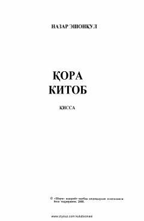

QKGunoh va tavba orasida qolgan insonning og'ir ichki iztiroblarini tasvirlovchi qissa.
Nazar Eshonqulning 'Qora kitob' qissasi ichki iztiroblar, gunoh va tavba mavzularini o'z ichiga olgan chuqur psixologik asardir. Asarda bir insonning hayot og'irligi, qilgan gunohlari va o'z-o'zi bilan hisob-kitob qilishi tasvirlanadi. Qahramonning ichki monologi orqali insoniy zaiflik va ma'naviy qidiruv kuchli ifodalanadi.